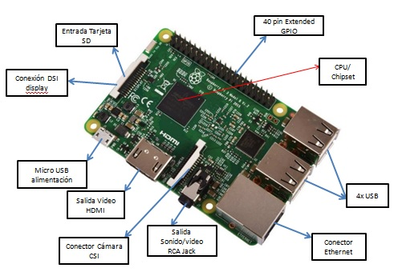
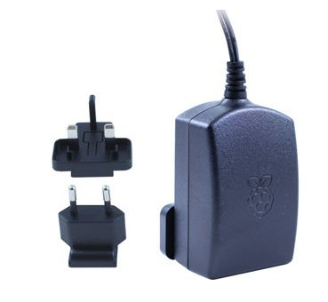
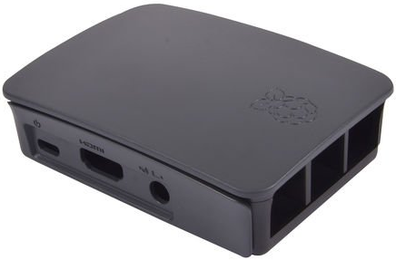
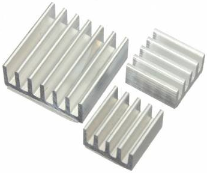
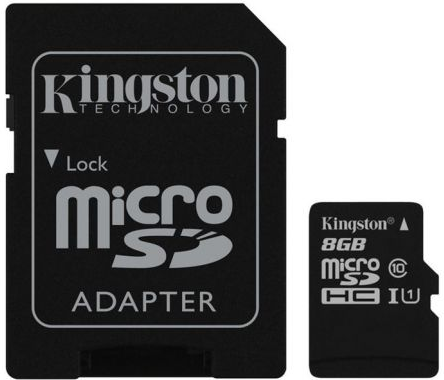

Dando los primeros pasos:
Al igual que no necesitamos ser ingenieros de telecomunicaciones para usar un móvil, tampoco hace falta ser informáticos para sacarle mucho partido a nuestro aula. Además, si podemos "montar" la clase con nuestros alumnos, conseguiremos que se formen tanto en Hardware como en Software.
¿Por dónde podemos empezar?;
Pues está claro, conociendo físicamente nuestra Raspberry, sus partes y componentes fundamentales y porqué no, los multiples periféricos que le podemos añadir.
A.- HARDWARE:
Componentes principales de Raspberry Pi 3*:

(* Elaboración propia)
Periféricos necesarios para crear una aula de Informática:
Pues en realidad no demasiados aunque la elección entre unos u otros, puede facilitarnos mucho la tarea, nuestra Raspberry Pi (a partir de ahora solo nos referiremos al modelo 3) ya incluye elementos básicos como la toma de alimentación.
*
Para comenzar y si no es el caso que compremos una raspberry pi con el kit de inicio (algo altamente recomendable por precio y comodidad), necesitaremos:
*/Carcasa protectora: Nos ayudará a proteger nuestra Raspberry Pi del polvo y de otros elementos.
*
*/ Disipadores de calor: Ayudan a nuestra Raspberry a no sobrecalentarse, se pegan muy fácilmente sobre los chipset de la placa.
*
*/ Tarjeta MicroSD: La mayoría ya vienen con adaptador para ordenador de sobremesa o portatil, lo recomendable para este proyecto, sería una capacidad de al menos 16 GB pero sobre todo una velocidad de escritura de 10. Esto último podemos saberlo si localizamos en la misma tarjeta el siguiente símbolo  *
*
*
*/ Cable HDMI: Para nuestro proyecto, no es necesario tener uno para cada Raspberry, aunque si en recomendable hacerse con unos cuantos.
(*Todas las imágenes extraídas de la Web de Amazon: www.amazon.es)
*/ Teclado y ratón: Aunque podrían servir cualquiera con entrada usb, si queremos que el aula sea funcional, estaría bien que se usase tecnología bluetooth. Si bien para una primera configuración es recomendable conectarlos mediante los USB, para evitar problemas de compatibilidad.
*/ Touch Screen LCD: Si la economía de nuestro centro nos lo permite, una buena solución que compagina los dispositivos de entrada y que resultará tremendamente cómodo y atractivo para nuestros alumnos es sin duda la "Touch screen" propia de Raspberry Pi. Compagina teclado y ratón y aunque ocupará dos conexiones de nuestra placa, a largo plazo sale rentable. Su precio va desde los 33 € a los 110 €.
 *
*
Si exceptuamos esta última, los demás componentes si serán necesarios para montar nuestra aula de informática. A modo de sugerencia, Os imagináis un aula que mediante Wifi tenga los siguientes elementos para nuestros alumnos....
Touch screen mas caja (20€) + (Raspberry Pi3 B + Disipadores + Tarjeta SD + Alimentador + HDMI )(75 €) = - de 100€/alumno
(precio aproximado).
Qué más necesitamos para comenzar.... Pues un equipo de sobremesa que actuará a modo de servidor en nuestra aula. No es necesario que sea muy potente, de hecho cualquiera de los que tenemos en nuestros centros que ya no sirven para las Aulas convencionales puede servir.
*/ Otros accesorios: La propia natulareza del proyecto Raspberry Pi, hace que el número de componentes que podemos añadir a nuestra placa no pare de crecer. Podemos encontrar alguna de los principales en los siguientes enlaces.
https://www.raspberryshop.es/accesorios-raspberry-pi.php
https://hipertextual.com/archivo/2014/05/accesorios-raspberry-pi/
http://www.raspipc.es/public/home/
Hasta cierto punto impresionante, ¿no?; Podemos ver miles y miles de proyectos que se han realizado con este mini ordenador, desde consolas retro hasta robots programables.
Recopilemos hasta ahora lo que necesitamos...
Hardware necesario
- Un equipo de sobremesa / portátil de edad para el servidor con un puerto Gigabit Ethernet.
- Un conmutador de red (requiere al menos un solo gigabit o 1000 puerto / 100 / 10mbit para el servidor).
- Un router (para una red independiente) o la conexión a la red de escuelas.
- Algunos cables Ethernet.
- Una Raspberry Pi y tarjeta SD con un tamaño de al menos 128 MB (recomendamos una tarjeta superior con al menos 4Gb de capacidad y velocidad de lectura-escritura +10.
- Tantas pantallas como raspberry queramos conectar. Podemos reaprovechar las de nuestro centro, usar touchscreen (quizá demasiado pequeñas para que los alumnos tengan una correcta visualización) o bien comprar pantallas nuevas.
Y ahora pasemos a Recopilar el software que vamos a necesitar, esta parte nos saldrá mucho más barata... de hecho es software gratuito y libre, por lo que solo tiene ventajas.
B.- SOFTWARE:
UBUNTU 16.04
Sistema Operativo Linux.
Para que nuestra aula de informática comience a tomar forma "digital" debemos previamente tomar una decisión, vamos a virtualizar el servidor esto es, sobre Windows XP o superior vamos a instalar VirtualBox y allí crear una máquina virtual con Ubuntu 16.04 o bien vamos a instalar desde cero en nuestro equipo servidor Ubuntu 16.04
Mi recomendación es la última de las opciones.
Así pues lo primero que necesitaremos será Ubuntu 16.04
Nosotros realizaremos el curso con ese Sistema operativo, eso sí, virtualizando el servicio mediante VirtualBox aunque todos los pasos son iguales que si lo realizásemos en una máquina propia.
La nueva versión de Ubuntu 16.04 LTS, es descargable desde: https://www.ubuntu.com/download
RASPBIAN:
Será el sistema operativo base que tendrán nuestros alumnos en sus Rapsberryv Pi.
PINET:
Pinet es un proyecto libre y de código abierto para ayudar a las escuelas establecer y gestionar un aula Raspberry Pi.
Se ha desarrollado junto a los maestros con la retroalimentación de más de 15 países de todo el mundo.
Sus características clave incluyen :
Que vamos a conseguir con ambos sistemas en funcionamiento:
Las cuentas de usuario de red : Las cuentas de los estudiantes de usuario se almacenan en el servidor central Pinet. Esto significa que pueden conectarse desde cualquier Raspberry Pi en el aula y no se pierde tiempo averiguando qué tarjeta SD pertenece a cada estudiante, o dicho de otra forma, las Raspberry Pi son intercambiables entre el alumnado.
El arranque de red: El sistema operativo Raspbian con el que Arranca la Raspberry Pi, también se almacena en el servidor central, es decir, cada vez que se enciende se restablece. Esto permite mantener un sistema operativo maestro perfecto, sin errores.
Carpetas compartidas y las copias de seguridad: Es muy sencillo configurar las carpetas compartidas para recursos con los estudiantes y también el uso de copias de seguridad automáticas.
Fácil de instalar : Pinet fue diseñado desde el principio para ser extremadamente fácil de configurar y mantener. De hecho son muchos los alumnos de menos de 12 años que han sido capaces de manejar a su antojo la red de equipos de este tipo de aulas.
Completamente gratuito: Pinet es totalmente gratuito y de código abierto. Esto significa que se puede utilizar para lo que quieras, donde quieras, sin coste y tener acceso a todo el código fuente para, si se desea, mejorar, cambiar o modifical cada uno de los aspectos que queramos, adaptándolo a nuestras necesidades.
Uso internacional: Este tipo de proyectos no son novedad en el mundo, muchos centros educativos de otros tantos países se han lanzado a "construir" este tipo de aulas, por lo que no estaremos solos en nuestra labor, de hecho sería beneficiosa la colaboración entre centros.
*/ TODAS LAS IMÁGENES UTILIZADAS EN EL PRESENTE MODULO HAN SIDO ELABORADAS POR EL AUTOR DEL CURSO.

Monta tu aula de informática con Raspberry Pi por Fernando Gasca Andreu bajo licencia Creative Commons Reconocimiento-NoComercial-CompartirIgual 4.0 Internacional License.